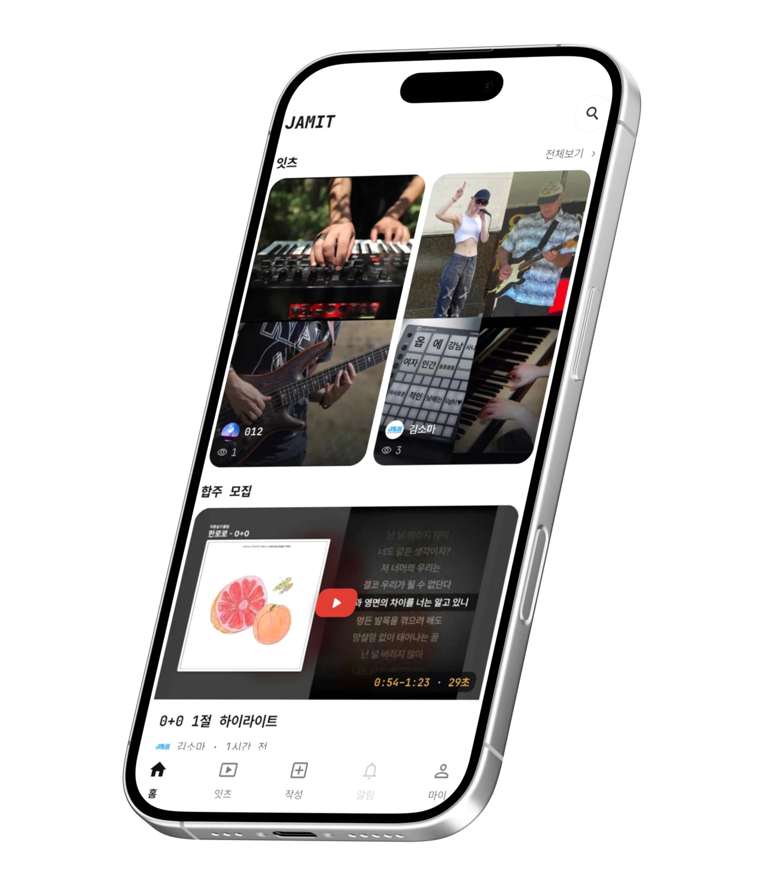
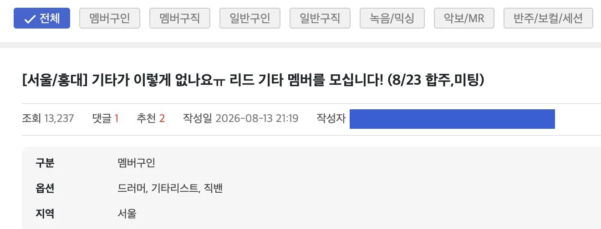
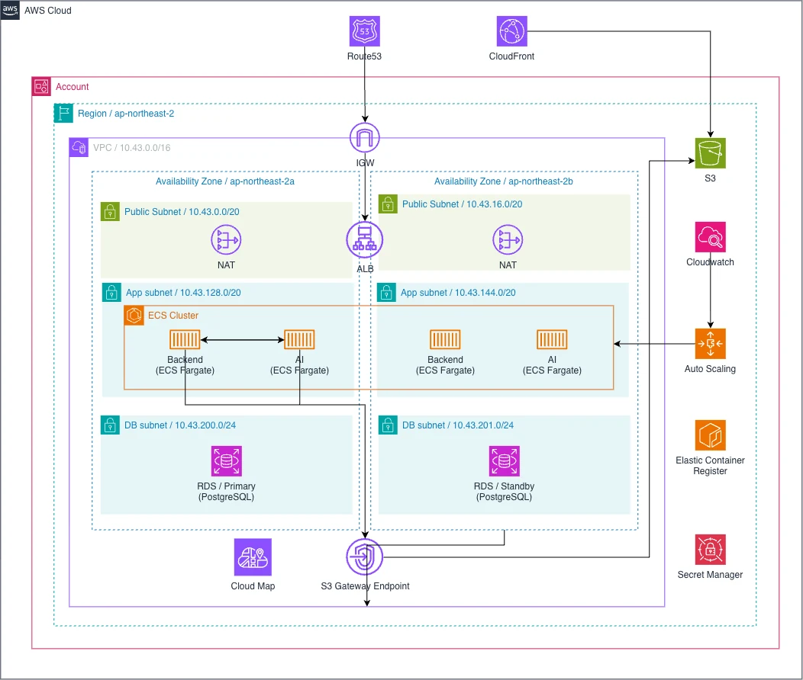
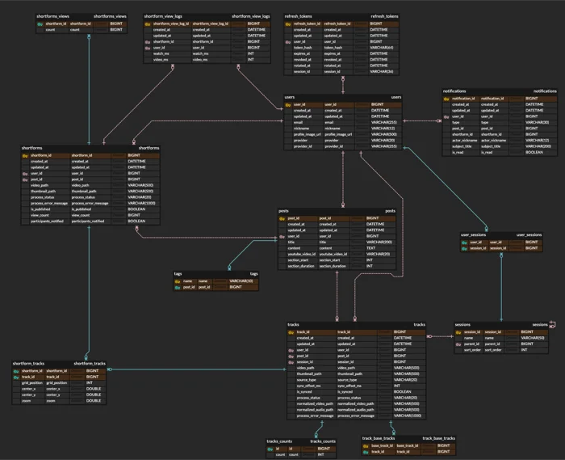
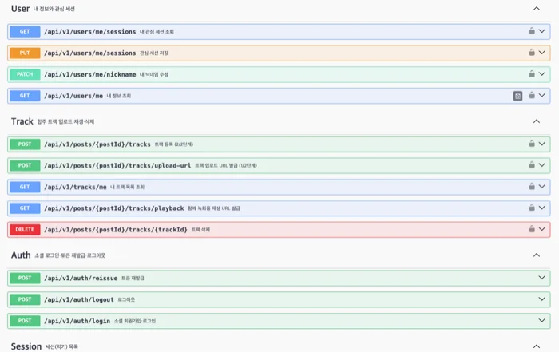
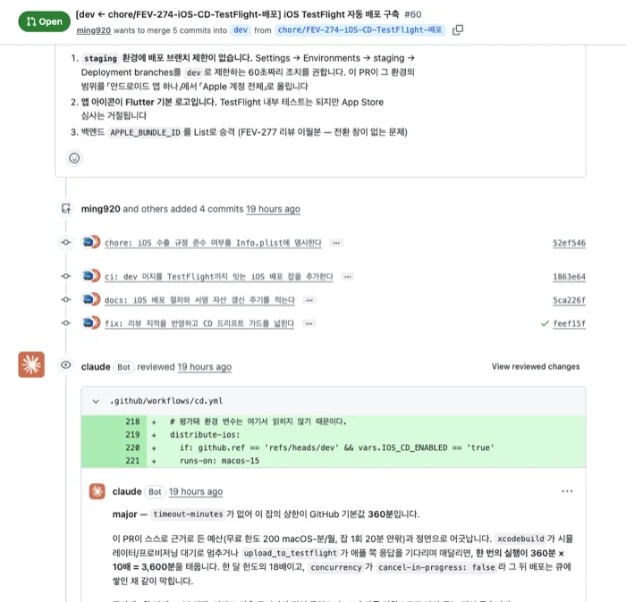

JAMIT · 비실시간 온라인 합주 플랫폼
언제 어디서나
원하는 노래로 만드는
나만의 합주

012 (영원히)
김민재
TODO · 담당
윤강훈
TODO · 담당
최재훈
TODO · 담당
목차
문제 선정
합주가 아직 어려운 이유
해결 방법
우리가 깨는 전제 하나
제품 소개
앱 플로우와 기술
팀 소개
3인 협업 방식
검증과 계획
시장 반응 · 로드맵 · 수익 구조
문제 선정
계속 늘어나는 연주 인구와 컨텐츠 크리에이터
하지만 합주 방식은 20년 전 그대로.
- 04늘어나는 연주 인구와 크리에이터
- 05그들이 원하는 것은 ‘함께’
- 06그런데도 여전히 어려운 합주
- 07기존 서비스가 못 푼 문제
- 08결론
늘어나는 연주 인구와 크리에이터
국내 성인 3명 중 1명이 악기 연주 가능
연주할 줄 아는 사람은 이미 충분
전 세계 음악 크리에이터
3년 만에 약 2배
그들이 원하는 것은 ‘함께’
신규 기타 입문자의 46%
“다른 사람과 함께 음악을 만들고 싶다”
기타를 새로 시작한 사람 중 46%의 답
국내 최대 음악 커뮤니티 뮬(Mule)의 멤버 구인구직 게시글
지금도 “같이 할 사람”을 찾는 중

2026.08.13에 올라온 실제 게시글 · 조회 13,237
그럼에도 여전히 어려운 합주
Q. 합주를 하고 싶어도 못 하는 이유 (복수응답 · 169명)
네 장벽이 고르게 작용 — 하나만 풀어서는 합주가 시작되지 않습니다
합주·세션을 자주 하지 못함
‘자주 있다’는 29.6%뿐
기존 서비스가 못 푼 문제
| 서비스 | 합주 방식 | 주 타깃 | 남는 장벽 | 준비물 |
|---|---|---|---|---|
| YAMAHA SYNCROOM |
온라인 실시간 | 중 · 숙련자 | 같은 시각 동시 접속 필수 → 시간 장벽 그대로 | PC · 오디오 인터페이스 |
| BANDHUG | 영상 기반 협업 | 숙련자 | 입문자에게 부담스러운 UI·UX → 실력 장벽 그대로 | 스마트폰 |
| 단톡방 · 커뮤니티 구인글 |
오프라인 · 수동 조율 |
전체 | 한 명만 빠져도 무산 → 네 장벽 전부 | 연습실 · 이동 · 일정 |
| JAMIT | 온라인 비실시간 | 입문자 ~ 중급자 | 네 장벽 모두 제거 | 스마트폰 하나 |
실시간을 전제하는 한 시간 장벽은 사라지지 않습니다
합주를 막는 건 한 가지 이유가 아닙니다.
‘같은 시간, 장소, 실력’이라는 전제입니다
이미 충분히 큰 수요연주 인구 33% · 크리에이터 3년 만에 2배 · 뮬 구인글 15.5만 건
막는 것은 네 장벽, 그것도 고르게시간 78 · 사람 74 · 실력 71 · 비용 67 (169명 복수응답)
해결 방법
전제 하나를 빼면 네 장벽이 한꺼번에 무너집니다.
- 10제품 정의 — 비실시간 온라인 합주
- 11동작 구조 — 세 단계
- 12기획심의 지적 반영
JAMIT — 비실시간 온라인 합주
언제, 어디서든, 어떤 곡의 어떤 파트든 — 휴대폰으로 내 파트만 찍어 올리면 참여 완료
장벽 01시간 조율
각자 편한 시간에 녹화
약속 조율 불필요
장벽 02인원 매칭
누구나 파트 추가
정원 없음
장벽 03실력 차이
마음에 들 때까지 재촬영
현장에서 틀릴 일 없음
장벽 04장소 · 비용
준비물은 휴대폰 하나
대관료 0원
동작 구조 — 세 단계
Jam Apart따로 연주하기
기준 영상을 보며 내 파트만 녹화·업로드.
박자와 구간은 모집자가 미리 지정.
- 각자 편한 시간에 촬영 — 약속 조율 없음
- 마음에 들 때까지 재촬영
- 준비물은 휴대폰 하나
참여의 문턱
Mix It골라서 합치기
모인 파트 중 원하는 연주만 선택해 조합.
한 번의 클릭으로 숏폼 완성.
- 파트별로 분리 보관된 트랙
- 같은 모집글에서 사람마다 다른 합주
- 바로 SNS에 올릴 수 있는 형태
결과물의 만족도
Together계속 모이기
좋아요·댓글·구간 이모티콘으로 반응.
활동에 따라 악기 레벨과 업적 누적.
- 영상의 그 지점에 붙는 반응
- 반응이 다음 연주의 동기
- 수집 요소가 인앱 재화로 연결
다시 돌아올 이유
지적 4건, 반영 결과
| 지적사항 | 내용 | 결과 | 반영 |
|---|---|---|---|
| 볼륨 정규화 필요 | 녹음 환경 · 기기에 따라 볼륨 차이 발생 | 완료 | FFmpeg 파트별 LUFS 정규화 알고리즘 개발 → 17 · 18쪽에서 상세히 |
| 기기 레이턴시 대응 | 녹화 기기에 따라 지연 발생 가능 | 완료 | 자동 보정 알고리즘 + 수동 미세조정 UI → 19 · 20쪽에서 상세히 |
| 오디오 양자화 우려 | 박자에 대한 과한 개입이 연주자의 자유를 해침 | 전략 변경 | 양자화 미진행 결정 연주의 흔들림도 그 사람의 연주 |
| 구독 가격 재검토 | 기존 가격 정책이 보수적 | 완료 | 원가 기반 재산정 후 정책 반영 → 32쪽에서 상세히 |
3건은 구현으로, 1건은 기능을 빼는 결정으로 답했습니다
제품
기획서가 아니라, 지금 손에서 동작하는 MVP.
- 14MVP 시연
- 15—16기능 ① 합주 참여 · 처리 파이프라인
- 17—18기술 ① 음량 정규화 — 개념 · 구현
- 19—20기술 ② 타이밍 보정 — 개념 · 구현
- 21—22기능 ② 트랙 조합 · 기술 ③ 원클릭 믹싱
- 23—24기능 ③ 커뮤니티 · 시스템 아키텍처
지금 동작하는 MVP
모집 → 참여 → 조합 → 내보내기
전 구간 연결 완료
- 기준 영상 + 합주 구간 → 모집 게시글 작성
- 기준 영상 보며 내 파트만 녹음·촬영
- 업로드 시점 음량·타이밍 자동 보정
- 트랙 선택 → 합주 숏폼 내보내기
30 ~ 60초 · 소리 켜고 재생
시연 영상 구성
- 파트 3종 — 일렉기타 · 건반 · 보컬
- 선곡 — 90~2000년대 국내곡 (아는 곡이라야 합이 들린다)
- 앱 조작 화면이 아니라 완성된 결과물부터

기능 ① 합주 참여
모집하는 사람게시글 작성
- 기준 영상 + 합주 구간 정보를 담아 업로드 →
참여자 전원이 같은 박자·구간에서 연주 - 기준 영상은 YouTube 공식 API 임베드 — 원본 복제 X
참여하는 사람파트별 자유 참여
- 기준 영상을 보며 자기 파트만 촬영
- 마음에 들 때까지 재촬영 — 실수 노출 없음
영상이 하나가 되는 여덟 단계
사용자가 누르는 버튼은 ‘올리기’와 ‘내보내기’ 둘뿐 — 나머지는 전부 서버 처리
A. 업로드 — 참여자가 영상을 올리는 순간
녹화 · 업로드
영상 보며 내 파트 촬영
지연 보정
기기 지연(3회 측정 중앙값)만큼 시작점 이동
음량 정규화
악기별 목표 LUFS 조정 · −1 dBTP 초과 금지
악기 종류별 트랙 저장
보컬·기타·드럼 단위로 분리 보관
B. 내보내기 — 보는 사람이 합주를 만드는 순간
트랙 선택
모인 연주 중 원하는 것만
원클릭 믹싱
장르별 LUFS + afir 공간감 프리셋 적용
그리드 합성
선택한 화면 배치로 영상 결합
숏폼 출력
바로 SNS에 올릴 수 있는 형태
기술 ① 음량 정규화
쉽게 말하면 — 참여자 전원의 소리 크기를 같은 기준으로 맞추는 장치
Before
제각각인 휴대폰 · 마이크 · 방 크기. 기타는 귀가 아프고 보컬은 안 들림. 참여자가 늘수록 악화.
After · JamIT
업로드 즉시 파이프라인이 자동 조정. 참여자가 할 일 없음.
합주에서 밸런스는 듣기 좋은가가 아니라 들리는가의 문제
자기 연주가 묻히면 다시 올리지 않습니다
HowFFmpeg 자동 처리
- 업로드 시점 FFmpeg 파이프라인에서 자동 처리
- 악기별 LUFS(체감 음량) 목표값에 맞춰 볼륨 조정
- dBTP(최대 진폭) −1 초과 금지 — 음 깨짐 차단
다섯 단계, 사용자가 고르는 건 세션 하나
| 단계 | 사용자가 보는 것 | 조작 |
|---|---|---|
| 목표 결정 | 업로드 1단계 — 세션 선택 화면 | 세션 선택 |
| 업로드 | 진행률 표시 | 영상 선택 |
| 측정 · 게인 · 적용 | “처리 중” 표시 | — |
| 완료 | 정규화된 트랙 카드 | — |
| 리드 | 선율 | 드럼 | 화성 | 백킹 · 베이스 | 타악 | 패드 |
|---|---|---|---|---|---|---|
| −18 | −20 | −21 | −22 | −24 | −26 | −31 |
세션명 → 역할 → 목표값 2단 매핑 · 미등록 세션은 중립값 −22
- 목표 조회target = ROLE_TARGETS[ SESSION_ROLES[세션] ]
- 측정loudnorm → input_i, input_tp — 소리를 건드리지 않는 측정 전용 호출
- 게인 계산gain = target − input_i — 뺄셈 하나로 목표에 정확히 안착
- 피크 제한input_tp + gain > −1 이면 gain = −1 − input_tp — 목표 미달을 감수하고 음 깨짐을 먼저 막는다
- 적용volume = {gain}dB — 순수 게인만 · EQ·컴프레션 없음
측정값은 앱에 보여주지 않습니다 — 숫자를 봐도 판단할 근거가 없고, 손댈 수단도 주지 않는 설계
기술 ② 타이밍 보정
쉽게 말하면 — 기기마다 다른 ‘소리가 늦게 도착하는 시간’을 미리 재서 빼는 장치
문제기기마다 다른 지연
- 이어폰으로 기준 영상을 들으며 연주 →
소리가 귀에 닿는 시간과 연주 소리를 마이크가 받는 시간 사이에 지연 발생 - 지연 폭은 기기 · 이어폰 · OS마다 상이
- 50ms만 밀려도 합주가 어긋나 들림
해결사전 측정 + 중앙값
- 녹화 전 테스트 음향 3회 출력 → 입력까지 걸린 시간을 각각 측정
- 세 값의 중앙값 채택 — 한 번 튄 값에 흔들리지 않음
- 기준 영상 사전 로딩으로 재생 시작 지연 제거
- 자동 보정 후 수동 미세조정 UI 제공
이 보정을 실제로 어떻게 돌리는지 — 다음 장에서 일곱 단계로
일곱 단계, 사용자 조작은 한 번
| # | 단계 | 사용자가 보는 것 | 조작 |
|---|---|---|---|
| 1 | 클릭 동기화 | “기준 영상을 준비하는 중…” | — |
| 2 | 반주 정밀 착지 | 잠깐 새어 나오는 로딩음 착지 오차 50ms 이내까지 재시도 | — |
| 3 | 지연 측정 | “삑 소리가 3번 울려요” · 측정 중 1/3 | 탭 1회 |
| 4 | 조율값 확정 | “조율 완료 · 실측 지연 40ms” | — |
| 5 | 어긋남 측정 | 3초 카운트다운 → 반주 시작 측정 표시 없음 · 테이크마다 자동 | — |
| 6 | 오프셋 확정 | 녹화 종료 · 확인 화면 | — |
| 7 | 서버 정렬 | 업로드 처리 중 → 완료 | — |
- L = 이 기기의 지연median(L₁, L₂, L₃) — 3회 재서 가운뎃값. 한 번 튄 값에 흔들리지 않음
- d₀ = 이번 촬영의 어긋남(landed − START)×1000 − (tYt − tRec) — 반주가 실제 착지한 지점과 영상이 시작된 지점의 차
- d = d₀ − L기기 지연까지 뺀 최종 오프셋. 보통 음수 — 녹화기가 먼저 돌아 내 영상이 반주보다 앞선다
- 서버 정렬trim = max(−d, 0) · pad = max(d, 0) — 앞을 자르거나 무음을 덧대 붙인다
AI 모델 없이 측정과 통계만으로 — 서버 비용도, 사용자 대기 시간도 들지 않습니다
기능 ② 트랙 조합과 숏폼 제작
Manage파트별 트랙 관리
업로드된 연주를 파트별로 분리 관리.
같은 파트에 여러 사람이 참여 가능.
Combine사용자 선택형 조합
모인 트랙 중 원하는 연주만 선택.
같은 모집글에서 사람마다 다른 합주 생성.
Export숏폼 생성 · 내보내기
영상 그리드 선택 + 원클릭 믹싱.
바로 SNS에 올릴 수 있는 형태로 출력.
자기 연주가 들어간 결과물을 SNS에 올리고, 그 영상이 다음 참여자를 데려오는 자연스러운 홍보 구조 확립
(설문에서도 “결과물을 SNS에 올리기 위함”이 32명으로 상위 응답.)
기술 ③ 원클릭 믹싱
쉽게 말하면 — 엔지니어가 하던 밸런스 조절을 장르 버튼 하나로
여러 파트를 어울리게 섞으려면 악기별 소리 크기와 공간감을 하나하나 맞춰야 합니다.
아마추어가 접근하기 어려운 전문 영역입니다.
조합해 놓고도 결과가 만족스럽지 않아 포기하게 되는 지점입니다.
JAMIT은 장르별 LUFS 밸런스 프리셋 + FFmpeg afir 공간감 프리셋을 묶어 두었습니다. 사용자는 장르를 고르기만 하면 전문가 수준의 믹스 밸런스가 재현됩니다.
afir : 입력 신호를 시간차를 두고 지연시킨 뒤
각각 가중치를 곱해 더함으로써 울림(공간감)을 만드는
FFmpeg 컨볼루션 필터
| 파트 | Default | Hard Rock | Acoustic |
|---|---|---|---|
| Vocal | −18 | −19 | −17 |
| Chord | −22 | −19 | −19 |
| Drums | −21 | −18 | −26 |
| … | 파트 · 장르별 확장 중 | ||
단위 LUFS · 장르가 바뀌면 파트 간 상대 크기도 변화
Hard Rock은 드럼이 앞으로, Acoustic은 뒤로
기능 ③ 커뮤니티와 성장
한 번 참여하고 떠나면 플랫폼이 아닙니다 — 다시 돌아올 이유를 설계했습니다
Interaction소통과 반응
- 좋아요 · 공유 · 채팅으로 참여자 간 소통
- 숏폼의 특정 구간에 이모티콘 반응 — 좋게 느껴지는 부분을 정확히 표시
- 연주에 대한 리액션 = 다음 연주의 동기
Growth활동 기반 성장 · 보상
- 참여와 활동에 따라 악기별 레벨 상승 (숏폼 영상에 사용된 횟수 등)
- 업적 · 프로필 꾸미기 등 수집 요소로 지속 참여 유도
- 이 보상 구조가 그대로 인앱 재화 수익 모델로 연결(32쪽)
몰려도 버티는 구조
서울 리전(ap-northeast-2) · 2개 가용영역 · ECS Fargate 컨테이너 기반

- 이중화가용영역 두 곳에 앱과 DB 분산 배치
RDS는 Primary / Standby — 한쪽이 죽어도 서비스 지속 - 격리앱(ECS)과 DB는 사설 서브넷 안에 배치
들어오는 길은 ALB 하나, 나가는 길은 NAT뿐 - 영상 전달원본·결과물은 S3, 사용자에게는 CloudFront
S3 게이트웨이 엔드포인트로 VPC 내부 직결 — 전송 비용 절감 - 부하 흡수백엔드와 AI가 각각 Fargate 컨테이너
업로드가 몰리는 시간대는 Auto Scaling이 컨테이너 수로 흡수
팀
저희 팀 012는요
- 26일하는 방식
- 27말이 아니라 기록으로
일하는 방식
3명이 쓸 수 있는 시간은 정해져 있습니다 — 핵심 경로에만 사람, 나머지는 도구로.
덜어낸 것도 근거를 남기고 덜어냈습니다 (오디오 양자화 · AI 잡음 보정 — 12쪽 · 부록 2)
01AI 페어 프로그래밍
- Claude Opus 5 ·
Sonnet 5로
코드 생성·리뷰 가속 - 누적 151M 토큰 사용
02자동화 파이프라인
- Claude Code +
GitHub Actions +
Atlassian 연동 - 코드 리뷰 · 테스트 ·
문서 작성 자동 처리 - 현재까지 795회 실행
03Human-in-the-loop
- AI 생성 코드도 적용 전
최종 리뷰는 사람이 직접 - 모든 코드는
팀원 검토 후에만 병합
04애자일 스프린트
- 2주 주기로 장기 로드맵 +
단기 실행 계획 수립 - 매 스프린트 회고 ·
Task 정의 · 분배
말이 아니라 기록으로

Jira 백로그


누적 커밋
앱 · 백엔드 · AI · 인프라 4개 레포
자동화 테스트
앱 912 · 백엔드 629 · AI 152
GitHub Actions 워크플로
CI · 스테이징 · 프로덕션 분리
자동화 실행
코드 리뷰 · 테스트 · 문서
넣을 것
- 남은 한 칸 — 스프린트 보드(Jira 백로그) 캡처. 글자가 안 읽혀도 된다, 밀도 자체가 메시지
- 캡션에 숫자 한 줄 더 — “스프린트 N회 · 누적 이슈 N건”
검증과
계획
만들었다는 것만으로는 부족 — 시장 반응 확인, 그다음 설계까지.
- 29시장 규모 — TAM · SAM · SOM
- 30시장은 이미 반응 중
- 31획득 단가(CPL)로 본 진입 가능성
- 32수익 구조 — 세 갈래
- 33언제부터 흑자인가
- 34로드맵 — 9월 정식 출시
얼마나 큰 시장인가
위에서부터 좁혀 내려온 1년차 목표(SOM)가 그대로 33쪽 손익분기의 MAU 가정이 됩니다
TAM · 전체 시장전 세계 음악 크리에이터
3년 만에 약 2배 — 시장 자체가 커지는 중
SAM · 유효 시장국내 악기 연주 가능 성인
산출 — 국내 성인 4,300만 × 33% (한국갤럽 · 4쪽)
SOM · 수익 시장출시 1년 목표 MAU
산출 — SAM × 침투율 0.014% · 근거는 31쪽 CPL
- S · 세분화합주 방식(실시간 / 비실시간) × 실력(입문 ~ 숙련)으로 시장을 4분면으로 나눔
- T · 표적합주를 원하지만 시간 · 사람 · 실력 · 비용에 막힌 입문 ~ 중급 취미 연주자
- P · 포지셔닝숙련자 · 실시간 · PC를 요구하는 SYNCROOM의 반대편 — 비실시간 · 입문자 · 휴대폰 하나 (7쪽 비교표)
시장은 이미 반응 중
인터뷰한 현역 음악가 중
사용 희망 비율
사전예약 랜딩페이지 전환율
설문 응답자의 79.9%가 사용 의향
꼭 써보고 싶다 23.7% · 흥미 있다 56.2%
획득 단가(CPL)로 본 진입 가능성
넣을 것 — 소액이라도 집행해 숫자 확보
- 광고 집행 결과 — 기간 · 비용 · 노출 수 · 사전예약자 수
- CPL(예약자 1명당 비용) — 목표 기준 3,979원 / 1명
- A/B 테스트 — 후킹 문구 2안 비교 (“혼자 연주해도 합주가 된다” vs “단톡방 없이 합주하기”)
- 전환자 분포 — 연령대 · 악기 · 전환 시간대 → 타깃 확정 근거
- 랜딩페이지 Clarity 세션 리플레이 · 퍼널 화면 — 이미 붙어 있으니 캡처만
수익 구조 — 세 갈래
BM 01구독
일부공개 게시글 · 비공개 ‘잇츠’ 생성 등
독점 기능 제공.
BM 02인앱 재화
활동으로 지급되는 재화로 수집 요소 구매. 다양한 금액대로 첫 구매 장벽 완화.
BM 03광고
영상 서비스 특성을 살린 보상형 광고.
재화 획득과 연결해 거부감 완화.
셋 다 합주에 참여할수록 이득이 되는 구조 — 결제하지 않아도 서비스는 온전히 동작합니다
언제부터 흑자인가
비용 · 월서비스 유지비
약 60만원 고정 30만 + MAU당 150원
매출 · 월가정
- MAU 2,000명
- 그중 4%가 7,900원 구독
- 그중 30%가 광고 20회 시청
달성 시 약 61만원
∴
MAU 2,000명 ·
구독 전환 4%부터
영업 순이익 발생
로드맵 — 9월 정식 출시
나만의 연주가,
우리의 합주로
합주를 원하는 사람은 이미 충분히 많습니다.
우리는 그들이 같은 시간에 모이지 않아도 되게 만듭니다.
Q & A
자주 나올 질문의 답은 부록에 정리.
FAQ 1/2
Q1. 유튜브 영상을 기준 영상으로 쓰는데, 저작권 문제는 없나요?
- AI 뉴미디어 교수 · 변리사 · 변호사 등 비기술 멘토와 다각도로 멘토링 진행
- 결론 — 공식 API 임베딩 방식이라 저작권 문제 없음. 원본 다운로드·재배포 없음
Q2. 기술 분류가 ‘인공지능’인데, AI는 어디에 쓰였나요?
- 초기 기획은 ‘미디어’. 진행 중 AI 기반 싱크 보정 · 정규화 · 잡음 보정을 기획하며 ‘인공지능’으로 변경
- 그러나 PoC 결과 AI 모델 없이도 정규화·싱크 보정 가능한 방안 확보
- AI 잡음 보정은 경량화에도 불구하고 모델 로딩 리소스가 과도함을 확인(부록 2)
- 합리적 BM과 최적 UX를 위해 오디오·비디오 핵심 기능에 AI 미사용으로 결론
FAQ 2/2
Q3. 자체 설문만으로 Pain Point를 증명할 수 있나요?
- 영국 아마추어 음악 단체 연합 Making Music의 유사 선행 설문 존재
- “다른 젊은이들이 합주에 참여하지 못하는 이유”에 88% 시간 압박 · 24% 실력 부족 부담 · 23% 자신감 부족 (복수응답 · 2016.06 · 816명)
- 선행 설문에도 불구하고 더 가까운 목소리를 직접 듣고자 자체 설문 진행 → Pain Point 실재 확인, 근거 보강
Q4. 실시간이 아니면 ‘합주’라 할 수 있나요?
- 연주자가 원하는 것은 동시성이 아니라 “함께 만든 결과물”. 설문 목적 1·2위도 ‘취미/재미’와 ‘친구와 함께하는 합주’
- 실시간을 고집한 SYNCROOM이 못 푼 것이 시간 장벽 — 그 전제를 포기하는 대신 참여 가능성 확보
잡음 보정 제외 근거
테스트 환경 · Intel Core Ultra 5 / Intel Arc 130V GPU / 16GB
| 평가 항목 | ffmpeg | DeepFilterNet3 | UVR-DeNoise | UVR-DeNoise Lite |
|---|---|---|---|---|
| 깔린 소음 제거 | O | – | O | O |
| 작은 잡음 제거 | △ | – | O | O |
| 큰 잡음 제거 | X | – | X | X |
| 건반 타건음 제거 | X | – | X | X |
| 원음 보존 | O | X (목소리 아닌 소리는 제거) | O | O |
| 모델 로딩 | – | 약 1s | 약 12s | 약 10s |
| 오디오 처리 (초당 처리량) | 42.8s | 10.5s | 1s | 6.1s |
단순 잡음은 제거되나 실서버 부하 대비 효용(ROI) 낮음으로 판단 → 잡음 보정 기능 배제 결정.
기획 단계에서 제기된 DeepFilterNet 포함 3가지 방법을 모두 테스트한 결과.
설문 원자료
2026.05.14 ~ 05.25 · 구글폼 · 169명
음악 커뮤니티 공유 + 취미 음악가·전공자·현업가에게 직접 배포
현재 연주 중 43.2% · 예전에 했음 36.7%
배우고 싶었으나 못함 15.4% · 기타 4.7%
시간 맞추기 78 · 같이 할 사람 찾기 74
실력 차이 부담 71 · 연습실/장소 비용 67
통기타 73 · 피아노/키보드 69 · 일렉기타 55 · 보컬 51
드럼 41 · 베이스 36 · 작곡/비트메이킹 23 · 기타 20
꼭 써보고 싶다 23.7% · 흥미 있다 56.2%
잘 모르겠다 15.4% · 생각 없다 4.7%
자주 있다 29.6% · 몇 번 있다 27.2%
거의 없다 13.6% · 전혀 없다 29.6%
개인적 취미/재미 136 · 친구와 함께하는 합주 93
사람들과 교류 56 · 개인 실력 향상 40 · SNS 업로드 32